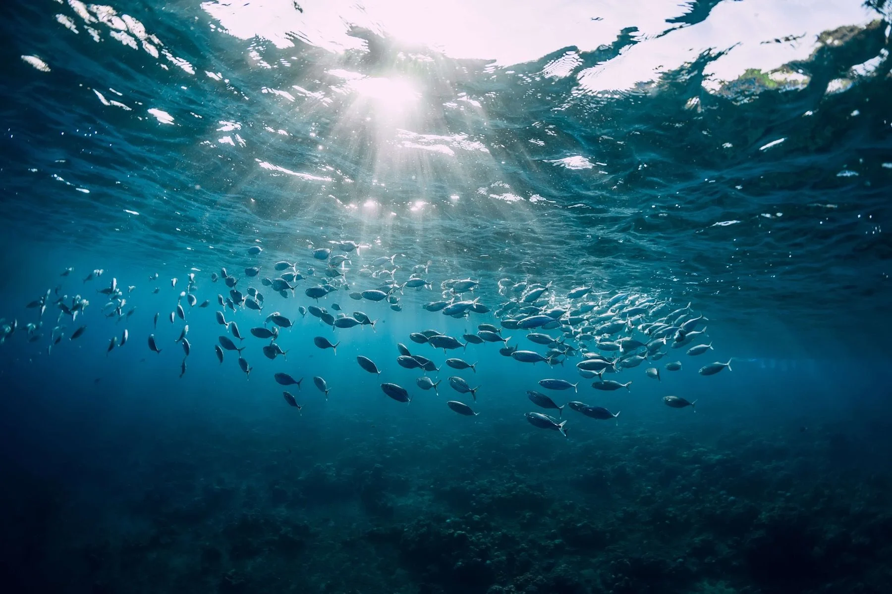

- Led a group of three to implement and evaluate the Fish School Search (FSS) using parallel computing techniques, in order to optimize solutions for real-world problems, aiming for improved efficiency over traditional serial approaches.
- Utilized CUDA, OpenMP, and MPI for algorithm parallelization on Perlmutter GPU, multi-core CPU, and distributed-memory machines (resources at the National Energy Research Scientific Computing Center (NERSC)).
- Designed experiments to benchmark parallel FSS against serial implementations, focusing on runtime efficiency, convergence speed, and scalability for large-scale graph optimization problems.
- Skills/Technologies: C++, C, CUDA, MPI, OpenMP
About the Project
"A nature-inspired optimization"
DEMO

Objectives
Fish School Search (FSS) algorithm, which was originally inspired from the behavior of fish, by emulating how fish forage to find near optimal solutions.
Our goal is to optimize the algorithm to faster convergence compared to the serial implementation. Hence, more complex problems can then be solved by utilizing our parallelized FSS algorithm (e.g. graph problems, networks assignment, ML parameter optimization) more efficiently.
Benchmark Function
The upper colored 3D graphs represent our benchmark function: higher the f value, more abundant the food resource at the coordinate is.
At t = 88.25, fish have just started to converge to the local maxima at the center. When t = 449.53, most of the fish have converged to the local maxima. Likewise, at t=633.02, local maximas have moved to the four corners, fish particles are then spreading out to converge.
Performance Across Machines
The left log-log plot shows the performance of our parallellelization on GPU in red, shared-memory CPU in yellow, and compared against the serial implementation on single-core CPU in blue. The x-axis represents the log10(# fish) and the y-axis represents the log10(time) in seconds. It is as expected to have a positive correlation between the increasing number of fish and the increasing GPU/CPU runtime. As well, the parallelized speedup is within expectation to significantly improve the convergence speed.
Strong Scaling on Shared-Memory CPUs
The right Speedup plot is produced by running 1e5 (100,000) fish with 64 threads on the Perlmutter shared memory CPU; it shows how closely our OpenMP code approaches the idealized p-time (p = number of threads) speedup. The result is within expectation, as the parallelization line appears to be close to the idealized speedup, but there is definitely space left to continue improving the parallelization implementation.